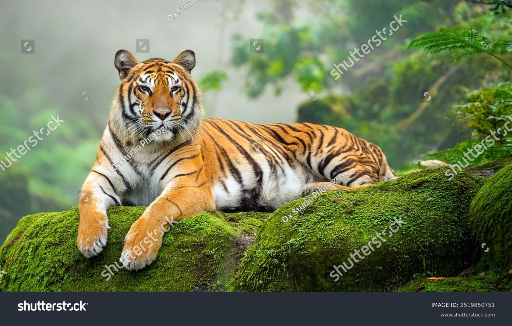

The Science Lab of Khulna Government Model School and College (KGMSC) is a state-of-the-art facility designed to provide students with practical, hands-on experience in science education. The lab is an essential part of the institution’s commitment to promoting scientific curiosity, experimentation, and problem-solving skills among students.
At khulna government model school and college, the Science Lab is equipped to support experiments in physics, chemistry, biology, and environmental science. It plays a key role in transforming theoretical knowledge into practical understanding.
Science education is vital for the intellectual development of students. At KGMSC, the Science Lab helps students understand scientific concepts clearly and encourages logical thinking and analytical skills.
Benefits of practical science at khulna government model school and college include:
1.Hands-on experience with experiments
2.Better understanding of scientific principles
3.Encouraging curiosity and inquiry
4.Development of critical thinking skills
The Science Lab ensures that learning is interactive, engaging, and effective.
The Science Lab at KGMSC is fully equipped to provide a safe and productive learning environment for students. Facilities include:
1.Physics equipment for mechanics, electricity, and optics
2.Chemistry apparatus for chemical reactions, solutions, and compounds
3.Biology tools for dissections, microscopes, and plant studies
4.Safety equipment including goggles, gloves, and first-aid kits
5.Measurement tools such as balances, thermometers, and voltmeters
These facilities allow students to perform experiments safely and gain practical knowledge.
At khulna government model school and college, the Science Lab emphasizes hands-on learning, which is essential for scientific understanding. Students actively participate in experiments to reinforce theoretical knowledge.
Hands-on activities include:
1.Conducting chemistry reactions safely
2.Observing biological specimens
3.Measuring and analyzing physics experiments
4.Recording and interpreting data
This interactive approach enhances learning outcomes at KGMSC.
The Science Lab at KGMSC encourages students to develop a scientific temper—curiosity, reasoning, and evidence-based thinking.
Students learn to:
1.Question and explore scientific phenomena
2.Analyze and interpret experimental data
3.Draw conclusions based on observation
4.Approach problems systematically
Khulna government model school and college nurtures students to think logically and scientifically.
Practical experiments in the Science Lab significantly contribute to academic excellence at KGMSC. Students who engage actively in lab activities often perform better in exams and develop a deeper understanding of science.
Benefits for academics include:
1.Clear conceptual understanding
2.Improved practical skills for assessments
3.Strong foundation for higher education
4.Enhanced problem-solving ability
The Science Lab bridges the gap between theory and practice at khulna government model school and college.
Safety is a top priority in the Science Lab at KGMSC. Students are trained to follow lab safety rules and guidelines under the supervision of experienced teachers.
Safety measures include:
1.Use of protective gear
2.Supervised experiments
3.Safe handling of chemicals and equipment
4.Emergency protocols
These precautions ensure a secure environment for learning.
Qualified and experienced teachers guide students in the Science Lab at khulna government model school and college. They provide step-by-step instructions, monitor experiments, and ensure correct observation techniques.
Teacher roles include:
1.Explaining lab procedures
2.Assisting with experimental setup
3.Ensuring accurate data recording
4.Providing feedback and guidance
This mentorship enhances the learning experience for KGMSC students.
The Science Lab encourages students to think creatively and explore innovative ideas. At KGMSC, students are motivated to design experiments, solve problems, and explore scientific possibilities.
Opportunities include:
1.Project-based learning
2.Innovative experiments
3.Participation in science fairs
4.Research and investigation
This environment fosters curiosity and innovation.
The Science Lab is fully integrated with the curriculum at khulna government model school and college. Practical experiments complement classroom lessons, ensuring a comprehensive understanding of science.
Integration includes:
1.Alignment with national curriculum
2.Practical demonstrations of theoretical concepts
3.Assessment through experiments
4.Reinforcement of classroom learning
This ensures students at KGMSC gain complete and balanced science education.
Practical experiments at KGMSC Science Lab enhance students’ observation, recording, and analytical skills.
Students learn to:
1.Observe phenomena accurately
2.Measure variables correctly
3.Record data systematically
4.Analyze results logically
These skills are essential for scientific studies and research.
Lab work at khulna government model school and college encourages collaboration. Students work in pairs or groups, which helps develop teamwork, cooperation, and communication skills.
Teamwork benefits include:
1.Coordinated experimentation
2.Sharing ideas and knowledge
3.Problem-solving collectively
4.Building social skills
The Science Lab also teaches students how to respect others’ perspectives and work efficiently in teams.
The Science Lab at KGMSC prepares students for careers in science, engineering, medicine, and technology. Practical experience builds confidence and skill, essential for higher studies.
Career preparation includes:
1.Laboratory skills for future studies
2.Understanding scientific methodology
3.Experience with modern tools and techniques
4.Foundation for competitive exams
The Science Lab strengthens students’ academic and professional prospects.
The Science Lab contributes significantly to the reputation of khulna government model school and college. Practical learning ensures KGMSC students excel academically and develop critical thinking skills.
Excellence includes:
1.Strong performance in science subjects
2.Active participation in science competitions
3.Recognition in inter-school programs
4.Promotion of scientific literacy
Khulna Government Model School and College aims to continuously upgrade its Science Lab with modern equipment, innovative experiments, and improved learning techniques.
Future goals include:
1.Advanced physics, chemistry, and biology instruments
2.Digital labs and simulation tools
3.Research-oriented projects
4.Enhanced student participation in innovation programs
The Science Lab at Khulna Government Model School and College (KGMSC) is a cornerstone of science education, providing students with hands-on experience, analytical skills, and scientific knowledge. It nurtures curiosity, innovation, and logical thinking while promoting academic success and personal growth.
Studying science at kgmsc means gaining practical experience, developing critical skills, and preparing for a future in science and technology.